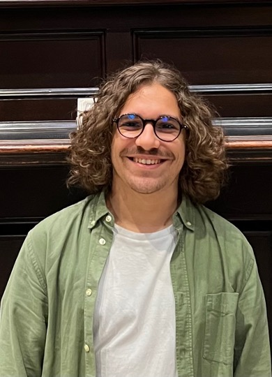

People
The researchers, students, and alumni who make this lab what it is.
Founders

Dr Martin Lo
Academic / Teaching LeadMy work focuses on understanding and mitigating digital and cyber-physical harms, examining how digital tools and platform features can be exploited to cause harm, as well as how they can be designed to prevent physical harm, protect victims, and improve online safety for vulnerable people.
Dr Enrico Mariconti
Academic / Research LeadA keen interest in understanding and tackling online harms to have an impact against societal issues in the digital world. From Delphi studies to AI systems, I use a large variety of research approaches to foresee, identify, and measure digital harms.
Academics and research fellows
Dr Lorenzo Pasculli
AcademicLorenzo is a leading expert on future crime driven by social and technological change, and on the legal, regulatory, and policy frameworks needed to prevent and prosecute it.

Dr Marie Vasek
AcademicI am interested in online fraud and privacy harms, with an eye towards the role of institutions and how they're governed. I strategically measure this towards understanding the phenomenon and developing countermeasures against it.

Tiago Marques
Research FellowMy PhD focus has been focusing on understanding and modeling hate and disruptive behaviour in online gaming, while I now work towards AI systems to prevent online fraud.
PhD Students and collaborators
Ema Mauko
PhD StudentCybercrime as a Service, Socio-technical impact of cybercrime
Kyle Beadle
PhD Studentinclusive online safety and privacy, online communities. LGBTQ+, research ethics
Alumni
- Ashly Fuller — Organised Crime and Exploitation Team Lead
- Antonis Papassavva — Cyber threat intelligence Analyst
- Sharad Agarwal — Risk Strategy & FinCrime Prevention